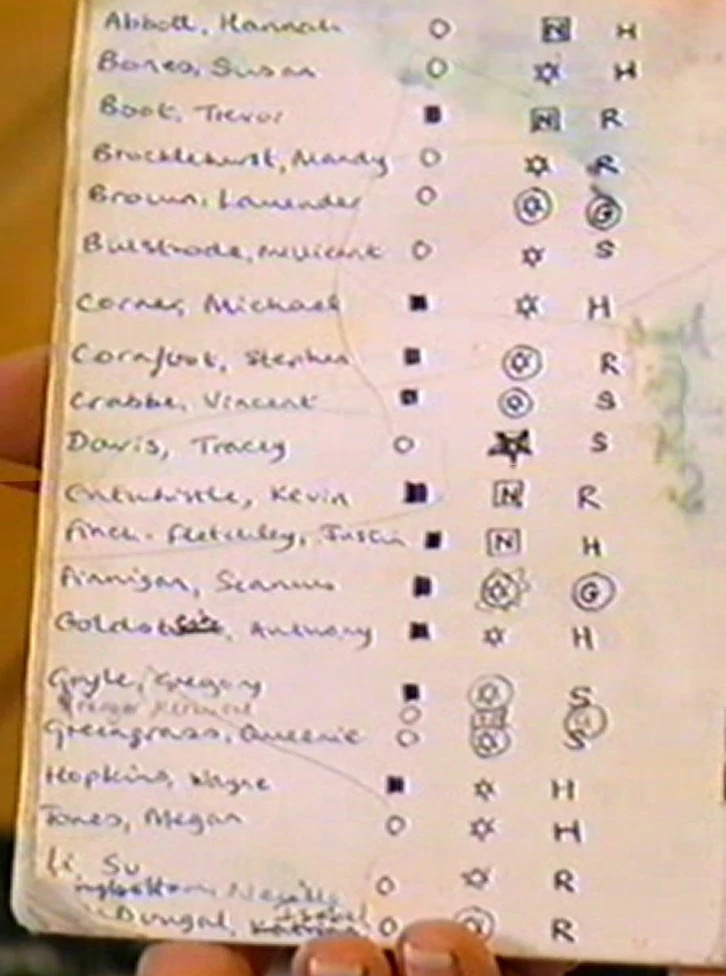

<section id="sobre-mi">
    <div class="contenedor">
        <div class="container-title">
            <h3 class="title">Curso y Evaluación</h3>
        </div>
        
        <div class="contenedor-sobremi">
            <div class="image">
                
            </div>
            <div class="texto">
                <p >
                    Durante los primeros cuatro años, los estudiantes sólo necesitan aprobar sus respectivas materias antes de avanzar al nivel siguiente. 
                    Los exámenes y lecciones parecen ser evaluados por una escala numérica del 0 al 100 aunque algunos estudiantes obtienen notas mayores que las notas perfectas.
                    Si un estudiante suspende el año, necesita repetirlo en el siguiente año escolar como fue el caso de Marcus Flint. 
                </p>
                <br>
                <p>
                    Para calificar como un practicante de magia registrado, el alumnado debe estudiar para los TIMO (Título Indispensable de Magia Ordinaria), 
                    conocidos en la traducción del cono sur como MHB (Matrículas de Honor en Brujería), y que corresponden a una serie de exámenes, 
                    y son examinados al final del quinto año. De ser aprobado, el estudiante debe realizar los ÉXTASIS (Exámenes Terribles de Alta Sabiduría e Invocaciones Secretas),
                    un avanzado régimen de exámenes que cubre varias materias a una mayor profundidad, y son examinados al final del séptimo año. 
                </p>
               
            </div>
        </div>
    </div>
</section>
